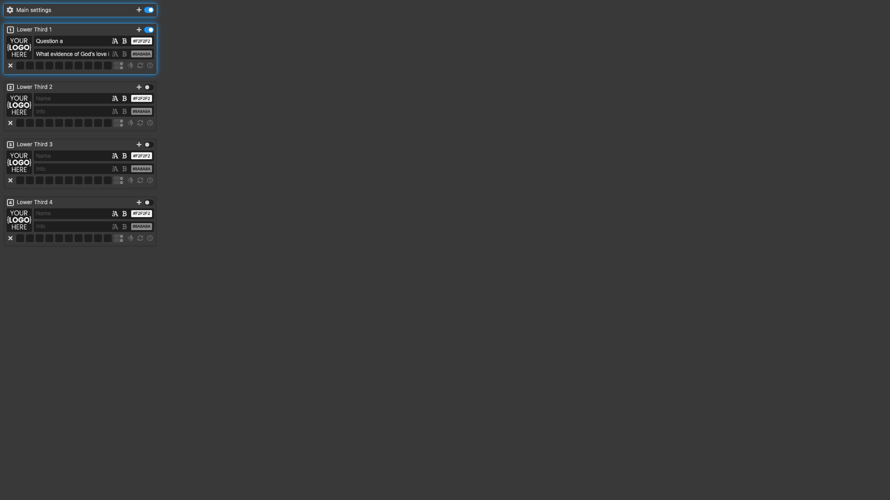
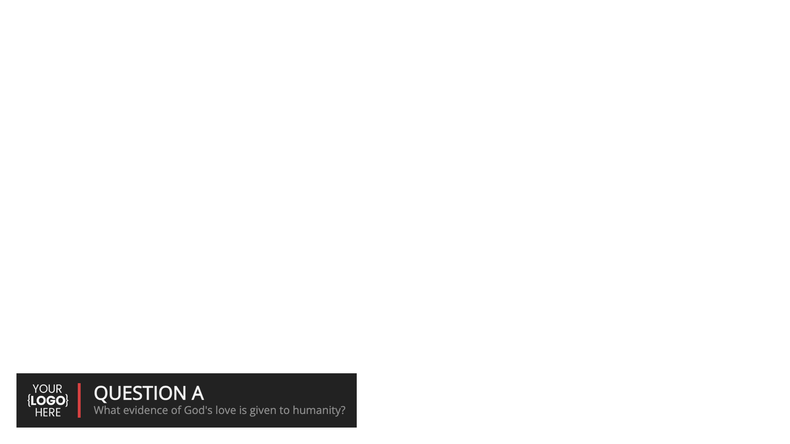
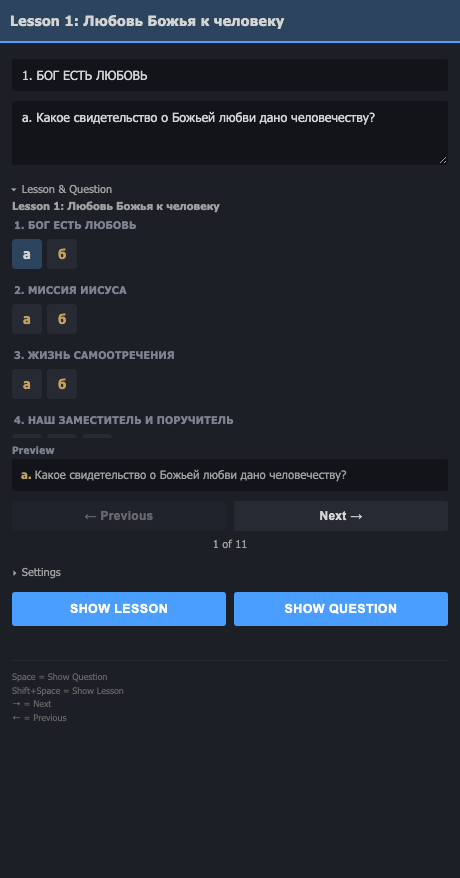
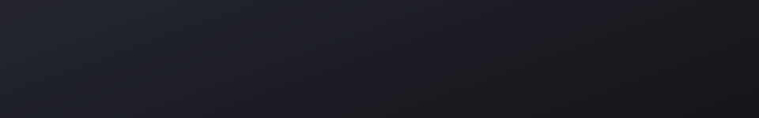
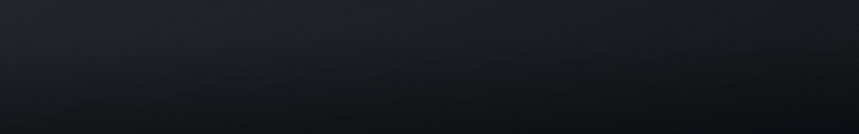
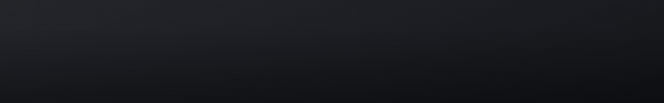

OBS_InforR-Lower/native/), so the entrance animation holds forever instead of auto-reversing after a couple of seconds. Style 3, "Quiet Rule", is our own design with no counterpart in the original. Background is true CSS transparency — no Chroma Key filter needed in OBS, unlike Plan 1. The panel offers these three named styles; the remaining built-in templates break with a long question (see LOCAL-SETUP.md for the full comparison, and the original lower.html?id=... still works directly by URL if you want to see all 5, auto-hide included). See AUTHORSHIP.md for exactly what is ours and what is borrowed.


